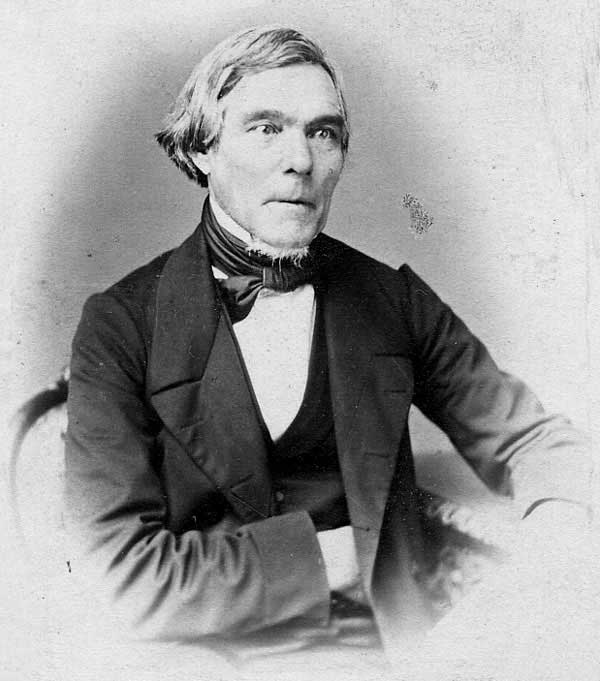

Elias Lönnrot
Monien laulajien äänistä rakentuu eepos.
Lönnrot kokosi, järjesti ja muokkasi suullista runoperinnettä Kalevalaksi sekä työskenteli suomen kielen kehittäjänä.
Etsi teokset kirjastostaElämä ja teokset
Elias Lönnrot syntyi Sammatissa. Hän oli lääkäri ja kielentutkija, joka teki useita runonkeruumatkoja. Kajaanin piirilääkärin työ kulki pitkään kirjallisen ja kielellisen työn rinnalla.
Kalevalan ensimmäinen versio ilmestyi vuonna 1835 ja laajennettu laitos vuonna 1849. Teos perustuu erityisesti suomalaisilta ja karjalaisilta runonlaulajilta kerättyyn aineistoon. Lönnrot yhdisti sitä kokonaisuudeksi toimituksellisilla ratkaisuillaan.
Tyyli ja teemat
Alkusointu, toisto ja rinnakkaiset ilmaukset luovat laulullisen liikkeen. Sanoilla on kertomuksissa konkreettista voimaa: niillä luodaan, kilpaillaan ja parannetaan. Sankaritekojen rinnalla kulkevat menetys, suostuttelu ja vaikeat ihmissuhteet.
Kansanrunous · Sana · Myytti
Aloita tästä
Kalevala
Eepos avautuu myös jakso kerrallaan. Seuraa esimerkiksi Ainon, Kullervon tai Sammon tarinakokonaisuutta ja anna säkeiden rytmin kantaa.
Lue muutama säe ääneen ja huomaa, miten sama ajatus palaa uudessa sanamuodossa.